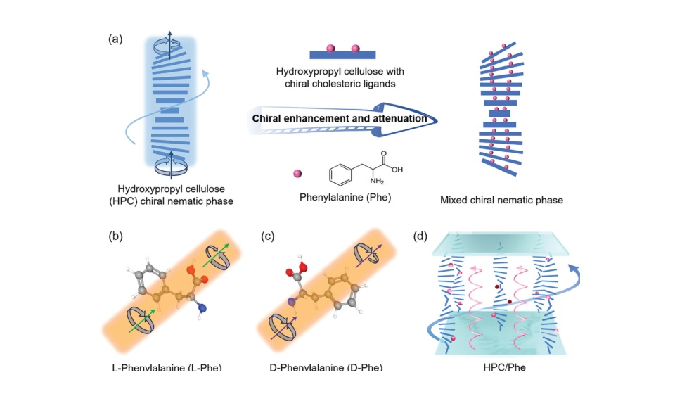
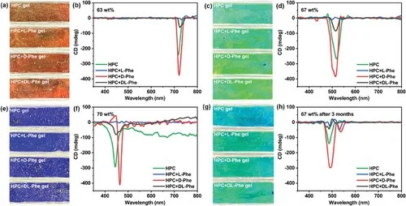

Chiral sensing in hydroxypropyl cellulose gels
KEY RESULTVisible-light identification of amino-acid enantiomers
This project explores hydroxypropyl cellulose (HPC) gels as a soft photonic platform for visible-light chiral sensing. By combining the structural color of cholesteric HPC with circular dichroism measurements, the system differentiates L-, D-, and DL- amino acids such as phenylalanine and alanine.
The work shows that gel composition, analyte concentration, and optical response can be tuned together, providing a simple and visually intuitive route to chirality-related sensing without relying on conventional UV-only instrumentation.


Paper: Chiral Sensing of Amino Acids under Visible Light via Hydroxypropyl Cellulose Gels ↗ — Advanced Optical Materials (2025).